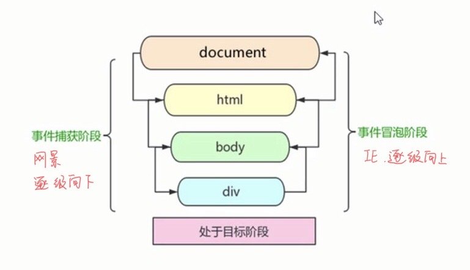
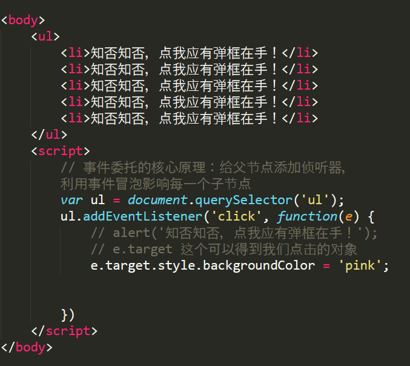

给元素注册添加事件称为注册事件或绑定事件，有两种方式：传统方式和方法监听注册方式
function addEventListener(e, eName, fn){
//判断当前浏览器是否支持addEventListener方法
if (e.addEventListener){
e.addEventListener(eName, fn);
} else if {
e.attachEvent('on' + eName, fn);
}else {
e['on' + eName] = fn;
}
}
首先照顾大多数浏览器，再处理特殊浏览器
删除元素事件称为删除事件或解绑事件，也有两种方式：传统方式和方法监听注册方式
事件流描述的是从页面中接收事件的顺序，事件发生时会在元素节点之间按照特定的顺序传播，这个过程即DOM的事件流
DOM事件流分为三个阶段：①捕获阶段；②当前目标阶段；③冒泡阶段
事件对象就是事件发生后跟事件相关的一系列信息数据的集合都放到这个对象中，他有很多属性和方法
element.事件名 = function(e) { 事件处理函数; }//其中的e就是事件对象，可以自己命名
// 阻止冒泡 dom 推荐的标准 stopPropagation()
var son = document.querySelector('.son');
son.addEventListener('click', function(e) {
alert('son');
e.stopPropagation(); // stop 停止 Propagation 传播
e.cancelBubble = true; // 非标准 cancel 取消 bubble 泡泡
}, false);
var father = document.querySelector('.father');
father.addEventListener('click', function() {
alert('father');
}, false);
document.addEventListener('click', function() {
alert('document');
})
阻止事件冒泡的兼容性解决方案
if(e && e.stopPropagation){
e.stopPropagation();
}else {
window.e.cancelBubble = true;
}
事件委托也叫事件代理，事件委派，原理：不是给每个子节点设置监听器而是将事件监听器设置在父节点上， 然后利用冒泡原理影响每个子节点,然后我们只操作了一次DOM，提高了程序的性能

//contextmenu 我们可以禁用右键菜单
document.addEventListener('contextmenu', function(e) {
e.preventDefault();
});
//禁止选中文字 selectstart
document.addEventListener('selectstart', function(e) {
e.preventDefault();
});